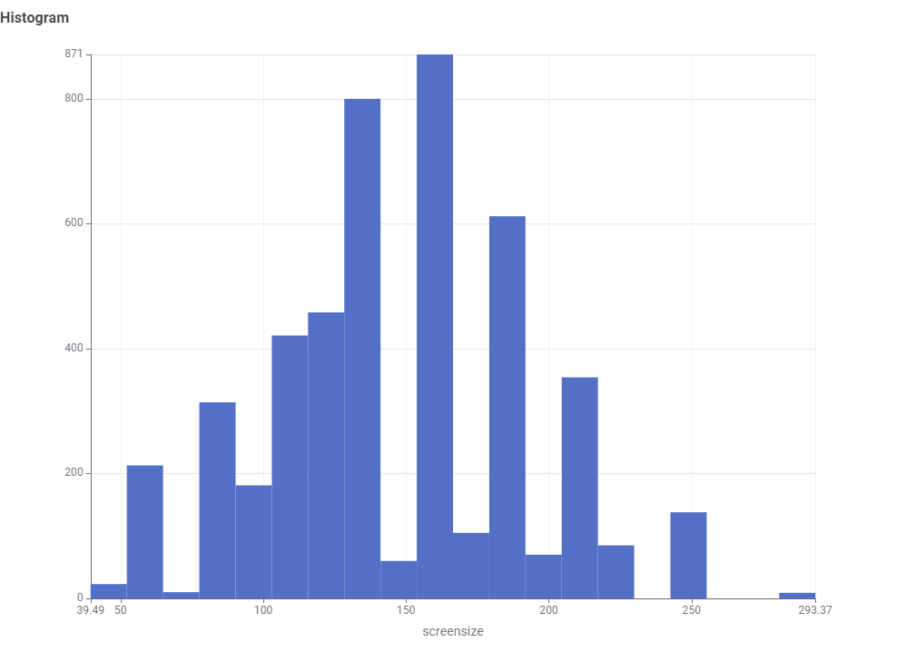
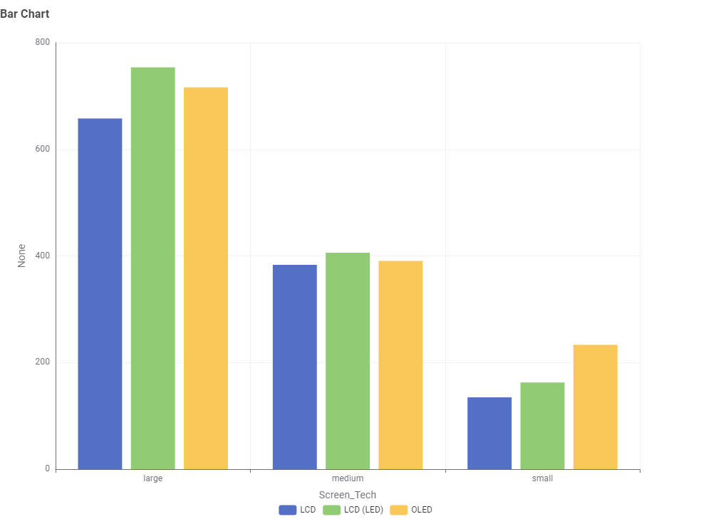

AUDIENCE
Household consumers
This page is written for people comparing televisions before buying. They need a simple story that helps them decide which screen size and screen technology to compare.
AUDIENCE
This page is written for people comparing televisions before buying. They need a simple story that helps them decide which screen size and screen technology to compare.
USER STORY
As a household consumer shopping for a new television, I want to understand which screen sizes are common and how screen technology changes labelled annual energy consumption, so that I can compare realistic TV options before buying.
DATA STORY 1 - HISTOGRAM
The histogram story gives the audience context before they compare energy use. It shows where most TV screen sizes sit in the processed dataset.

Shoppers often begin with TV size, but the dataset contains many different screen-size ranges.
Household consumers need to know which screen sizes are realistic choices before comparing electricity use.
The histogram counts televisions by screen size, showing how common or uncommon each size range is.
Many televisions cluster in the middle-to-large range, while very small and very large models appear less often.
A useful energy comparison should start inside the size range the shopper is most likely to buy.
Choose a realistic screen-size range first, then compare similar TVs using their labelled energy values.
DATA STORY 2 - BAR CHART
The bar chart story focuses on LCD, LCD (LED) and OLED televisions. It compares average labelled annual energy consumption inside the small, medium and large screen-size categories.

A buyer may assume screen technology alone decides energy efficiency, but size and technology work together.
TV shoppers want to compare LCD, LCD (LED) and OLED models within the size category they are considering.
The grouped bars compare average labelled kWh/year across screen-size categories and screen technologies.
Large TVs have the highest average consumption across the technologies shown in the chart.
Technology still changes the comparison inside each size group, so the technology label is useful but not enough.
Compare the labelled kWh/year value for similar-size TVs instead of choosing by technology name alone.
FINAL MESSAGE
The histogram helps shoppers choose the screen-size range to compare. The bar chart then helps them compare screen technology and labelled annual energy consumption within that size range.